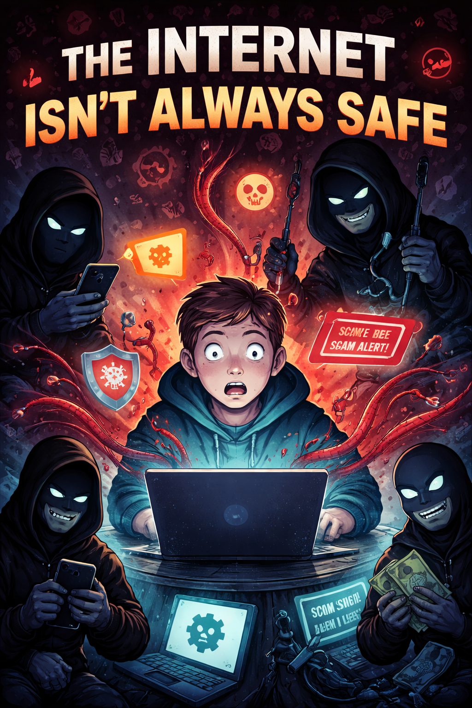
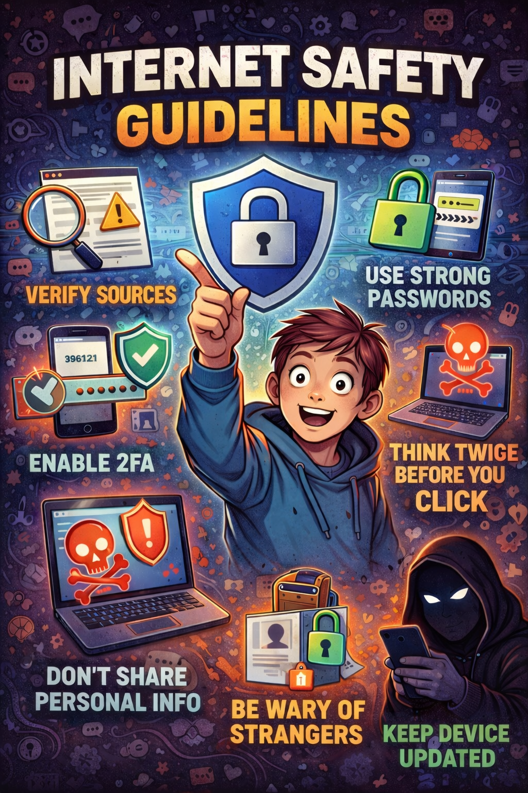

The Internet Isn't Always Safe

Although the internet is a vast space with great power, it is not always safe and can expose users to various risks. It allows people from different parts of the world to connect, provides instant access to information, and makes communication easier. It also helps individuals carry out daily activities such as shopping, learning, and working. However, despite these advantages, the internet presents several dangers that can affect users of all ages. Many people are unaware that they can be exposed to online risks simply by using the internet.
One of the major risks linked to internet use is cyber threats, which include hacking, phishing, malware, and identity theft. Hackers use different strategies to deceive users into revealing sensitive information such as passwords, bank details, and personal data. In addition, social media platforms can become risky when users overshare personal information, making them vulnerable to online threats.
Real-World Application
The use of the internet among Filipino youths is extensive. But despite its many beneficial uses, the internet can be dangerous, too. As indicated by UNICEF, Filipino kids and adolescents often experience negative and risky experiences in the online world, which may include cyberbullying, exposure to inappropriate material, and online exploitation. Recent data have shown that more than 85% of Filipinos under age feel unsafe due to online behavior and content.
Online grooming may involve the use of social networks and instant messengers to establish trust in order to exploit children. Children are sometimes given cash and other valuables as incentives to perform undesirable activities. In some cases, they are intimidated and blackmailed. There have also been reports of acceptance of friend invitations by children from strangers on the internet.
From these cases, it becomes apparent that although there are several positive aspects associated with using the internet, danger lurks in the virtual world.
Author's Reflection

Reflecting on this topic, I have come to realize how important it is to be cautious and responsible when using the internet. Its convenience and accessibility can sometimes lead to carelessness, causing users to overlook potential risks. However, understanding that the internet is not always a safe space encourages me to be more mindful of my actions and the content I share online.
In my future career, I expect to rely heavily on the internet for handling sensitive information, communicating with clients, and using digital systems. Because of this, it is essential for me to ensure that proper safety measures are in place. Being knowledgeable about online security will help protect not only myself but also the people I work with.
Additionally, I see it as part of my responsibility to promote awareness of internet safety in my future profession. By encouraging others to practice responsible online behavior and stay informed about digital risks, I can contribute to building a safer and more professional online environment.
"In a place where anyone can hide behind a screen, one careless moment online can have lasting consequences"
— Lorin Genesis Abuedo